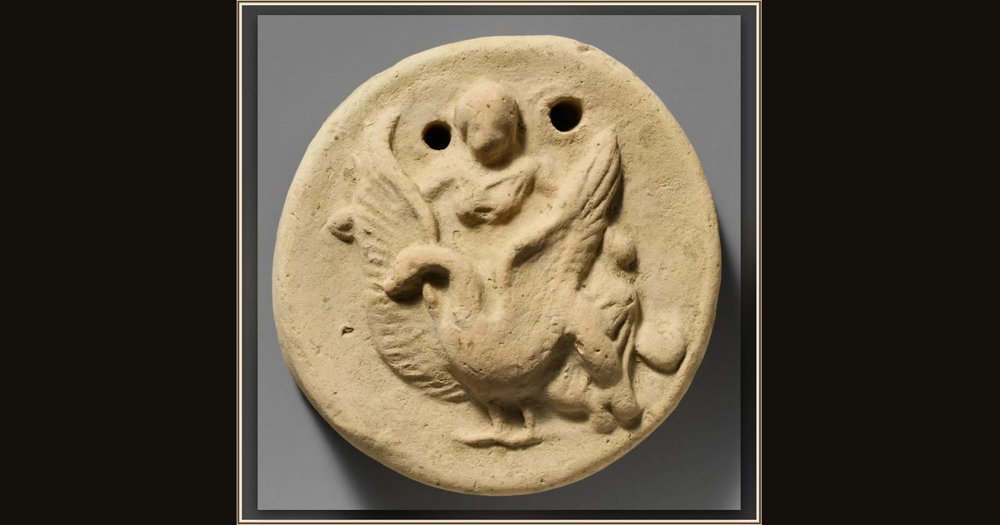

Terracotta disk with Aphrodite riding on a swan
Greek · 4th century BCE · met
This Greek terracotta disk shows Aphrodite riding a swan; Sappho calls on the goddess of Cyprus to come and pour nectar in golden cups. (6) Explore its place in Sappho's Poems and Fragments, Fragments 6–15, section 1.